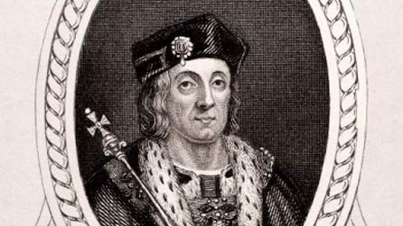

There are theories that Owen fought at Agincourt and became an esquire of King Henry V. In 16th century France, it was said that he was the illegitimate son of an alehouse keeper, and in 18th century Wales, it was purported that his father was a fugitive murderer. These rumours are largely unfounded and show just how much speculation there is regarding the early life of Owen Tudor. We know that in May 1421, an ‘Owen Meredith’ joined the service of Sir Walter Hungerford, who was the steward of the king’s household where he served in France. Following this appointment, his life once again becomes shrouded in mystery. It is within these years, however, that we know Owen Tudor met Queen Catherine, and this meeting has inspired romantics and writers of historical fiction and poetry for years. It is rumoured that the relationship between Owen Tudor and Catherine began when Owen met Catherine by falling into her lap while dancing, while another story claims that Owen Tudor caught Catherine’s eye while he was swimming! Regardless of how they met, however, their subsequent relationship would change the English monarchy, removing the Plantagenet dynasty and replacing it with their very own Tudor one.
A well-known quote, contained in a blockquote element.